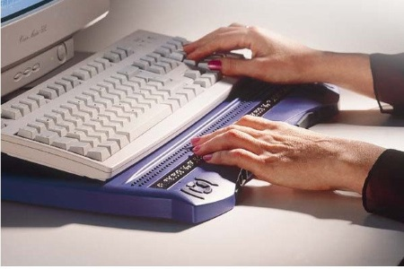
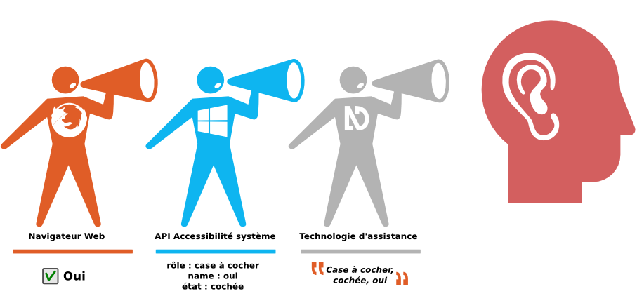

Qu'est-ce qu'un lecteur d'écran ?
Définition du lecteur d'écran
Un lecteur d'écran (également appelé revue d'écran) est un logiciel d’assistance technique destiné aux personnes « empêchées de lire » (aveugles, fortement malvoyantes, dyslexiques, dyspraxiques…) : il retranscrit par synthèse vocale et/ou sur un afficheur braille ce qui est affiché sur l'écran d'un ordinateur tant en termes de contenu que de structure et permet d’interagir avec le système d’exploitation et les logiciels applications.
Source : définition d'un lecteur d'écran - Wikipédia

Fonctionnement des lecteurs d'écran
Un lecteur d'écran est un logiciel qui agit comme une interface entre l'utilisateur et un contenu mis à disposition par un autre logiciel. Par exemple, pour le web, le lecteur d'écran restitue le contenu qui lui est fourni par le navigateur.
Nous verrons qu'il est donc important que chaque information soit indiquée au navigateur pour que le lecteur d'écran la restitue correctement à l'utilisateur. Un lecteur d'écran ne peut pas encore réfléchir et tenter de décoder, si on ne lui donne pas « toutes les billes ». Contrairement à l'être humain, il ne pourra pas interpréter un dessin, un graphique ou tout autre objet non textuel.
Un lecteur d'écran peut être :
- un composant intégré au système d'exploitation, comme VoiceOver sous Mac ou le Narrateur sous Windows ;
- un plug-in, comme ChromeVox, qui permet de lire certaines informations dans le navigateur ;
- un logiciel (JAWS, NVDA, Orca, etc.) à télécharger et installer sur le système d'exploitation, qui permet d'accéder à l'ensemble du système et de ses applications.
Le lecteur d'écran se sert des informations envoyées par le logiciel en cours d'utilisation grâce aux API d'accessibilité du système d'exploitation. Ces informations traitées par le lecteur d'écran sont elles-mêmes renvoyées à la synthèse vocale et/ou à l'afficheur braille.
Le rôle du navigateur web
Dans le cas spécifique de la navigation sur le web, le navigateur a en charge deux rôles principaux.
Il doit mettre à disposition une version particulière du DOM appelée accessible tree ou DOM accessible en français. Il s'agit d'une arborescence d'objets similaire au DOM correspondant au code généré et enrichie, pour chaque élément qui le nécessite, des informations essentielles à l'accessibilité.
Il doit également fournir toutes les informations disponibles sur les éléments du contenu à l'API d'accessibilité système (MSAA / UIA pour Windows, AT-SPI pour Linux ou AXAPI pour OSX) directement (comme Internet Explorer avec Windows) ou avec sa propre API (comme l'API « universelle » IA2 utilisée par Firefox), sous la forme de couples propriétés/valeurs statiques ou dynamiques.
Dans le cas d'une case à cocher d'un formulaire, par exemple, le lecteur d'écran va puiser dans ces deux sources d'information (le DOM accessible et l'API d'accessibilité) pour retranscrire vocalement l'élément en cours de consultation. NVDA avec Firefox annoncera, lorsque l'utilisateur activera l'élément à la prise de focus : « case à cocher, non cochée, oui » puis « oui, case à cocher, cochée » lorsque l'utilisateur aura coché la case.

Lecteur d'écran et navigateur web
Comme expliqué en introduction, un lecteur d'écran n'est pas un navigateur et ne peut pas travailler tout seul. Il s'agit d'une interface logicielle entre l'utilisateur et le contenu via le système d'exploitation et le logiciel utilisé, en l'occurrence le navigateur. Cela explique pourquoi, lorsqu'on découvre un lecteur d'écran, il est si déroutant de constater que ce qui fonctionne très bien avec un navigateur se révèle catastrophique avec un autre. Ce n'est pas anormal, chaque lecteur d'écran est en effet, peu ou prou, optimisé pour un navigateur particulier (par exemple NVDA est optimisé pour Firefox, JAWS pour Internet Explorer et VoiceOver pour Safari).
Utilisation d'un lecteur d'écran
Le lecteur d'écran se pilote presque exclusivement au clavier.
L'utilisateur se sert dans un premier temps des raccourcis du système d'exploitation pour se déplacer de fenêtre en fenêtre, fermer une application, aller sur le bureau. Il peut aussi utiliser les raccourcis clavier propres au lecteur d'écran, qui lui permettent d'obtenir des informations sur le nom de l'application dans laquelle il se trouve, le nombre de liens sur la page, l'heure qu'il est, etc.
Chaque lecteur d'écran a ses raccourcis clavier spécifiques et l'utilisateur doit faire un effort important pour les mémoriser.
Le lecteur d'écran va intercepter toutes les touches du clavier et, selon leur nature, le mode de consultation, le type de contenu et le composant, filtrer l'action à réaliser. Il y a donc un dialogue permanent entre le lecteur d'écran et le navigateur, chacun d'entre eux étant chargé d'informer son partenaire, en temps réel, de l'état et des moindres changements dans le contenu, comme des commandes et actions effectuées par l'utilisateur.
Navigation à la souris
Même si l'utilisateur principal du lecteur d'écran est la personne aveugle, qui se sert exclusivement du clavier, l'option de lecture vocale peut aussi être utilisée par les personnes malvoyantes qui voient assez l'écran pour naviguer avec une souris, mais dont la vue se fatigue. Les personnes dyslexiques ou dyspraxiques pourront également se servir d'une souris pour « vocaliser », grâce à la synthèse vocale du lecteur d'écran, les informations qu'elles ont du mal à déchiffrer.
En plus des raccourcis clavier proposés par les lecteurs d'écran, certains de ces logiciels disposent d'un système de sonorisation de la souris afin de permettre à l'utilisateur de savoir où et sur quoi se trouve le pointeur.